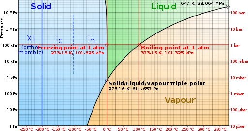

ASTR101 Midterm Review
Fundamentals
- Convert 60 mph to SI Units, given that one mile is 1.61 km.
- How many significant figures in (a) 0.07800, (b) 002.3×1023, (c) 1010.0×1010?
- If a=10.007, b=2.300×103, and c=1.1×10-3, what is (a) b*c, (b) a/b, (c) a+b, (d) a-c?
- If you're standing at 45° N, 22.85° W, over a full year, can you see a star at α=12h23m2.5s, δ=-40°2'3''? Support your answer with a diagram.

- Equate the difference between a sidereal day and a solar day. On Earth, do the stars appear to rise earlier or later every morning? Equate how much earlier or later, showing your work.
- Draw and label a solar and a lunar eclipse.
- What is parallax?
- List three points of evidence that the Earth is round.
- List three points of evidence supporting the heliocentric model over the geocentric model.
- List, in order, Kepler's three laws; explain briefly.
- How would my weight on Earth change if its radius doubled while its mass halved?
- A planet orbits a star with a period of 22 years with a semimajor axis of 30 AU. The star weight one million times more than the planet. How much mass does the star have?
- How was Neptune discovered?
- What is the approximate eccentricity of Earth's orbit? List three points of evidence that the seasons are not caused by the eccentricity of Earth's orbit. What does cause the seasons?
- List the different types of light from longest wavelength to shortest wavelength (when you get to the visible spectrum, list the colors). Circle the ones that penetrate the atmosphere.
- You and your friend in Australia measure the day with stopwatches to be exactly the same length. Where will the Sun's latitude be in three months?
- What angle in the sky do you observe the waxing crescent Moon at 6 am from Valencia, NM?
- As star has a temperature of 4400 K. At what wavelength do we perceive the star? What about the frequency? What is this light's energy?
- The Sun has a luminosity of 382.8×1024 J/s. What's its flux (in J/s⋅m) one Earth distance away? What if the Earth were twice as far? BONUS: How much power does the Earth receive from the Sun?
- Define adaptive optics, integration time, aperture, eyepiece, and spectrometer.
- How can radar astronomy be used to measure the speed of a planet? Is this practical for stationary stars in the celestial sphere?
- Define greenhouse effect, runaway greenhouse effect, and runaway refrigeration effect; specify how each relates to different wavelengths of light, and include specific examples of each.
- Mercury and Pluto are .39 and 39.5 AU from the Sun, respectively. If the average temperature on Mercury is 500 K, what's the average temperature on Pluto?
- How did the dinosaurs die?
- Name three points of evidence for global warming.
- Why are Mercury and the Moon both "weird", and what caused each?
- What makes Mars red?
- What spacecraft mapped Mars orbit with the most remarkable accuracy?
- A sample is known to have been made entirely out of an isotope with a half life of 5 billion years. If 27% of it is left, approximately how many years old is it?
- LA exhibits slippage of 7 m every 150 years in the form of a massive earthquake, but hasn't had one since 1857. If an earthquake doesn't occur until 2057, how much slippage will it correspond to?
- For water, (a) what is the maximum temperature at which sublimation can occur? (b) What is the minimum pressure (in bar) at which liquid can exist? (c) what is the phase of water at 500 K and 100 bar?

- Why is it difficult to examine the seasonal trends of the outer planets?
- List the planets in order of distance from the Sun; include Kuiper and Asteroid belts and Oort cloud. Circle the planets that are similar in the same circles (they should be pairs, except for one triplet).
- Why are Saturn's atmospheric layers more "spread out" than Jupiter's?
- Why is Uranus nearly featureless when we look at it? Is there wind on Uranus?